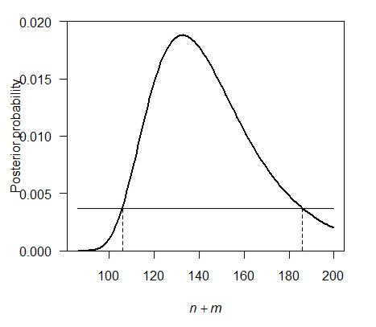

This workshop demonstrates principles of data analysis (estimation and model selection) in a Bayesian framework. For probability and likelihood calculations consult the “Prob” tab at the R tips site.
Estimation in a Bayesian framework is related to likelihood methods. With likelihood, we treat the data as given and vary the parameter to find that value for which the probability of obtaining the data is highest. Bayesian methods go one step further, treating the parameter (or hypothesis) as a random variable and seeking the value having highest posterior probability, given the data. We need to specify a prior probability distribution for the parameter values.
Selecting among candidate models requires a criterion for evaluating and comparing models. We’ve already investigated AIC in a previous workshop. Here we demonstrate the superficially similar Bayesian information criterion (BIC). The approach has a tendency to pick a simpler model than does AIC.
This example continues one from the likelihood workshop. Eggert et al. (2003. Molecular Ecology 12: 1389-1402) used mark-recapture methods to estimate the total number of forest elephants inhabiting Kakum National Park in Ghana by sampling dung and extracting elephant DNA to uniquely identify individuals. Over the first seven days of collecting the researchers identified 27 elephant individuals. Refer to these 27 elephants as marked. Over the next eight days they sampled 74 individuals, of which 15 had been previously marked. Refer to these 15 elephants as recaptured.
Provided the assumptions are met (no births, deaths, immigrants, or emigrants while the study was being carried out; the dung of every elephant had an equal chance of being sampled, and selection of each individual was independent of the others), then the number of recaptured (previously marked) individuals X in the second sample should have a hypergeometric distribution with parameters k (the size of the second sample of individuals), m (total number of marked individuals in the population when the second sample was taken), and n (total number of unmarked individuals in the population at the time of the second sample).
Using the hypergeometric distribution, calculate the log-likelihood of each of a range of possible values for the number of elephants in the Park. Note that the total number of elephants is n + m, and that m is known (m = 27). Note also that only integer values for n are allowed, and that n cannot be smaller than k - X, the observed number of unmarked individuals in the second sample.
Plot the log-likelihood function. Find the value of n that maximizes the likelihood. Add m to this number to obtain the maximum likelihood estimate for population size.*
Calculate the likelihood-based 95% confidence interval for the total number of elephants.**
* 133
** 104 < N < 193
To develop a Bayesian estimate of population size, we will need to come up with prior probabilities for each of the possible values for n. In reality this might be based upon previous information (visual counts; tracks; knowledge of the maximum number of elephants that can be sustained in an area the size of the Park, etc.). In the absence of prior information, the convention is to use a “flat” or non-informative prior. To apply this to the elephant problem we will come up with a realistic minimum and maximum possible population size. Then we give each value within this interval a prior probability equal to 1 divided by the number of integer values within the interval.
Decide on a minimum and maximum possible value for n, the number of unmarked elephants in the Park (or N = n + m, the total number, if that’s how you’re calculating the likelihoods). The minimum n can be as small as 0 but the likelihood will be 0 for values smaller than k - X, so it is practical to set the smallest n to something greater or equal to k - X. For this first exercise don’t set the maximum too high. We’ll explore what happens later when we set the maximum to be a very large number.
Create a vector of n values (or N = n + m values) containing all the integers between and including the minimum and maximum values that you decided in (4).
Calculate the likelihoods of each of these values for n. Plot the likelihoods against n (or N). Plot the likelihood function. (We need the likelihoods rather than the log-likelihoods for the posterior probability calculations.)
Create a vector containing the prior probabilities for each of the possible values for n that you included in your vector in (5). If you are using a flat prior then the vector will be the same length as your n vector, and each element will be the same constant. Plot the prior probabilities against n. If all is OK at this stage then the plot should show a flat line. Also, confirm that the prior probabilities sum to 1.
Using your two vectors from (6) and (7), calculate the posterior probabilities of all the possible values of n (or of n + m) between your minimum and maximum values. After your calculation, confirm that the posterior probabilities sum to 1. Plot the posterior probabilities against n (or n + m). Compare with the shape of the likelihood curve.
What is the most probable value of n + m, given the data? Compare this with your previous maximum likelihood estimate.*
Calculate the 95% credible interval for n (or n + m, the total population size).** The pocedure for finding the lower and upper limits of the credible interval is a bit like that for likelihood. The idea is illustrated in the figure below. Starting from the highest point of the posterior probability, slide a horizontal line downward until you reach a point at which the corresponding values for the parameter (indicated below by the dashed vertical lines) bracket an area of 0.95 under the curve.

Try to think of a method to find the values for n (or n + m) that correspond to an area under the curve equal to 0.95. Trial and error might work. At the bottom of this section I describe a crude method that worked for me, but try to come up with a method yourself first.
Compare your 95% credible interval for population size with the approximate likelihood-based 95% confidence interval. Which interval is narrower? Also compare the interpretations of the two intervals. How are they different? Are they compatible? Which makes the most sense to you? Why?
Repeat the procedures (4)-(10) but using a much larger value for the maximum possible population size. How is your credible interval affected by the increase in the maximum value of the posterior probability distribution?
What general implication do you draw from the influence of the prior probability distribution on the interval estimate for population size? Do you consider this implication to be a weakness or a strength of the Bayesian approach?
* 133
** lower: 106, upper: 187
Here is one way to find the approximate lower and upper limits to the credible interval.
# First, order the posterior probabilities from highest to lowest
post.ordered <- posterior[order(posterior, decreasing = TRUE)]
# Remember to order the corresponding n values the same way
N.ordered <- N[order(posterior, decreasing=TRUE)]
# Obtain the cumulative sum of the posterior probabilities from lowest to highest
post.cumsum <- cumsum(post.ordered)
# Finally, find N corresponding to a cumulative posterior probability of 0.95.
range(N.ordered[post.cumsum <= 0.95])The area under the curve corresponding to this interval will actually sum to slightly less than 0.95. To be conservative, subtract 1 from the lower limit, or add 1 to upper limit, whichever first brings us over 0.95 cumulative posterior probability.
In this second example we will compare the fit of linear and nonlinear models to a data set using a Bayesian model selection criterion. Consult the “Fit model” tab of the R tips pages for information on how to calculate the Bayesian Information Criterion (BIC).
We haven’t discussed nonlinear model fitting before. Information on how to fit a nonlinear model using nls in R is also provided on the “Fit model” tab at the R tips web site.
We will investigate the relationship between an ecosystem function variable, CO2 flux, and the number of eukaryote species (protists and small metazoans) in an experimental aquatic microcosms. (An average of 24 bacterial species was present but not included in the species counts.)
The data are from J. McGrady-Steed, P. M. Harris & P. J. Morin (1997, Nature 390: 162-165). Download it from here.
The variables are:There are 82 data points representing replicate mesocosms. For this exercise we will assume that each replicate is independent, even though there is overlap in the species composition of different assemblages.
These data can be used to test two alternative models to desceribe the role of biodiversity in ecosystem function:
H1: Each new species added makes the same contribution to ecosystem respiration regardless of how many species are already present. In this case, a linear relationship is expected between community respiration and the number of species.
H2: Multi-species communities include species that are functionally redundant, at least for univariate measures of ecosystem function. Under this view, as the number of species increases in a community, each new species makes a smaller and smaller contribution to ecosystem respiration until an asymptote is reached. In this case, the relationship might be described by a Michaelis-Menten curve (see Fit Model page).
Download and read the data from the file.
Plot CO2 flux against number of species.
Fit a simple linear regression to the data. Add the regression line to the plot. Judging by eye, is it a good fit?
Fit a Michaelis-Menten model to the data. You’ll need to use the version of the formula having a non-zero y-intercept. (Note: When I tried to fit the model to the data the estimation process did not converge, perhaps because 2 rather than 0 or 1 is the smallest value for the explanatory variable. I had better luck when I used the number of species minus 2 rather than number of species as the explanatory variable in the model formula). Add the fitted line to the plot. Judging by eye, is it a good fit?
Calculate BIC for both the linear and nonlinear models that you fit in (3) and (4)*. Which hypothesis has the lowest BIC? Does this accord with your visual judgements of model fit?
Calculate the BIC differences for the two models, and then the BIC weights**. These weights can be interpreted as Bayesian posterior probabilities of the models if both the linear and Michaelis-Menten models have equal prior probabilities, and if we assume that one of these two models is the “true” model. Of course, we can never know whether either of these models is “true”, but we can nevertheless use the weights as a measure of evidence in support of both model, if we are considering only these two.
Compare the models using AIC instead of BIC. Do you get the same “best” model using this criterion instead?
Which hypothesis about the role of biodiversity in ecosystem function receives strongest support from these data?
Assuming that it were possible, would conventional null hypothesis significance testing be a poorer, equivalent, or superior approach to the one used above to decide between the two models? Why?
Will ecosystem respiration really reach an asymptote or might it continue to increase, albeit at a slower and slower rate, as the number of species increases? The power function can be used to model the latter situation. Which function, the Michaelis-Menten or the power function, has strongest support? Use the number of species minus 2 rather than number of species as the explanatory variable in the model formula.
* linear = 1300.878, non-linear = 1294.914
** weight: 0.04823876 and 0.95176124 respectively
© 2009-2020 Dolph Schluter